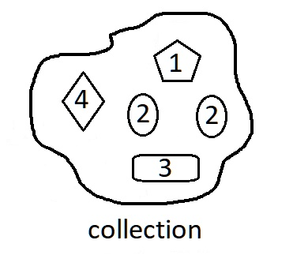
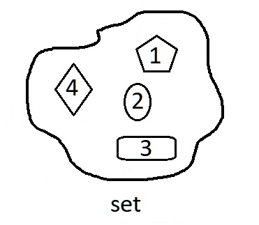

overview of whole
description::
× Mcsh-creation: {2019-10-22}
· whole-entity is an-entity that has parts (= attribute we consider internal).
· collection is a-whole without relations and 'parts'.
· system is a-whole with relations and 'parts'.
=== all!~noun:
· _sntxEngl: We counted all.
=== all!~adjective:
· _sntxEngl: All students must attend the meeting.
=== all!~adverb:
· _sntxEngl: It is all right. (attribute of adjective)
=== quán..dōu-全..都!=whole:entire:
· _sntxZhon: 我们 全 家 都 去 过 北京 。 :: Wǒmen quán jiā dōu qù guo Běijīng. != Our entire family has been to Beijing.
· _sntxZhon: 大家 全 都 到 了。 :: Dàjiā quán dōu dào le. != Everybody has arrived.
· _sntxZhon: 他们 全 都 没 去 。 :: Tāmen quán dōu méi qù. != None of them went.
· _sntxZhon: 他 说 得 有 道理 ，但 我 不 全 都 同意 。 :: Tā shuō de yǒu dàolǐ, dàn wǒ bù quán dōu tóngyì. != He has a point, but I don't agree with all of it.
definition::
specific:
· whole is an-entity with parts (= internal-attributes).
generic:
·
part:
·
whole:
· parts make-up a-whole.
name::
* McsEngl.McsCor000008.last.html//dirCor//dirMcsh!⇒whole,
* McsEngl.dirMcsh/dirCor/McsCor000008.last.html!⇒whole,
* McsEngl.WHOLE,
* McsEngl.adjeEngl.all!=whole,
* McsEngl.adjeEngl.entire!=whole,
* McsEngl.adveEngl.all!=whole,
* McsEngl.adveEngl.altogether!=whole,
* McsEngl.adveEngl.completly!=whole,
* McsEngl.adveEngl.entirely!=whole,
* McsEngl.adveEngl.totally!=whole,
* McsEngl.adveEngl.wholly!=whole,
* McsEngl.all!~adjeEngl!=whole,
* McsEngl.all!~adveEngl!=whole,
* McsEngl.altogether!~adveEngl!=whole,
* McsEngl.completly!~adveEngl!=whole,
* McsEngl.entire!~adjeEngl!=whole,
* McsEngl.entirely!~adveEngl!=whole,
* McsEngl.entity.whole!⇒whole,
* McsEngl.holonym!=whole,
* McsEngl.totally!~adveEngl!=whole,
* McsEngl.whole,
* McsEngl.whole.lagoSngu!=teu,
* McsEngl.whole.lagoElln!=όλο!το,
* McsEngl.whole!~McsCor000008,
* McsEngl.whole!=whole-entity!⇒whole,
* McsEngl.whole-entity!⇒whole,
* McsEngl.whole-of-part!=part//whole,
* McsEngl.wholly!~adveEngl!=whole,
====== lagoSinagu:
* McsSngu.teu!=whole,
====== lagoChinese:
* McsZhon.quán..dōu-全..都!=whole:entire,
* McsZhon.全..都-quán..dōu!=whole:entire,
* McsZhon.zhěnggè-整个!=whole,
* McsZhon.整个-zhěnggè!=whole,
====== lagoEsperanto:
* McsEspo.tuto!=whole,
====== lagoGreek:
* McsElln.επίθετο.ολός!-ος-η-ο!=whole,
* McsElln.ολός!-ος-η-ο!~adjeElln!=whole,
* McsElln.ολότητα!η!=whole,
====== lagoTurkish:
* McsTurk.tüm!=whole,
======
"Below is a comparative linguistic overview of the word **“whole”** across major **language families**, including **native script** and **standard romanization** where applicable. The focus is on the sense *“entire, complete, undivided”* (not “healthy” unless noted).
---
## 1. Indo-European Languages
### Germanic
| Language | Native Form | Romanization / Notes |
| English | whole | |
| German | ganz | |
| Dutch | geheel | |
| Swedish | hel | |
| Danish | hel | |
### Romance
| French | entier / tout | |
| Spanish | entero / todo | |
| Italian | intero / tutto | |
| Portuguese | inteiro / todo | |
| Romanian | întreg | |
### Slavic
| Russian | целый | tselyy |
| Ukrainian | цілий | tsilyi |
| Polish | cały | |
| Czech | celý | |
| Serbian | цео / целина | ceo / celina |
### Hellenic
| Greek | όλος / ολόκληρος | ólos / olóklīros |
⭢ Etymology note: Greek **ὅλος** is the source of *holistic, holism*.
---
## 2. Afro-Asiatic Languages
| Arabic | كامل / كل | kāmil / kull | “complete” / “all” |
| Hebrew | שלם / כל | shalem / kol | related to “peace” (shalom) |
| Amharic | ሙሉ | mulu | |
---
## 3. Uralic Languages
| Finnish | kokonainen | |
| Hungarian | egész | also “healthy” |
---
## 4. Turkic Languages
| Turkish | bütün / tam | “entire” / “complete” | |
| Azerbaijani | bütöv | | |
| Kazakh | бүтін | bütin | |
| Uzbek | butun | | |
---
## 5. Sino-Tibetan Languages
| Mandarin Chinese | 整体 / 全部 | zhěngtǐ / quánbù |
| Cantonese | 整體 / 全部 | zing2 tai2 / cyun4 bou6 |
| Tibetan | ཆ་ཚང | cha tshang |
---
## 6. Japonic & Koreanic
| Japanese | 全体 / 全部 | zentai / zenbu |
| Korean | 전체 | jeonche |
---
## 7. Austronesian Languages
| Indonesian | utuh | |
| Malay | keseluruhan / utuh | |
| Tagalog | buo | |
---
## 8. Dravidian Languages
| Tamil | முழு | muḻu |
| Telugu | మొత్తం | mottaṁ |
| Kannada | ಸಂಪೂರ್ಣ | sampūrṇa |
---
## 9. Niger-Congo Languages
| Swahili | nzima | | |
| Yoruba | gbogbo | also “all” | |
| Zulu | wonke | | |
---
## Cross-Linguistic Observations
1. **Whole vs All vs Complete**
Many languages distinguish:
* *whole* (undivided entity)
* *all* (totality of elements)
* *complete* (nothing missing)
2. **Semantic overlap with “healthy”**
In Germanic, Uralic, and Semitic languages, *whole* historically overlaps with *health* (e.g., English *whole*, German *heil*, Hebrew *shalem*).
3. **Holistic terminology**
Greek **ὅλος** underlies *holistic*, *holism*, and *holarchy* in philosophy and systems theory.
4. **Romanization standards**
* Chinese: **Hanyu Pinyin**
* Japanese: **Hepburn**
* Korean: **Revised Romanization**
* Semitic languages: scholarly transliteration
---
If you would like, I can:
* Contrast **whole / part / total / complete** across languages
* Provide **IPA phonetic transcriptions**
* Focus on **philosophical, legal, or systems-theory usage**
* Trace **etymological links between “whole” and “health”**"
[{2025-12-12 retrieved} https://chatgpt.com/c/693c3732-d790-8332-aeb6-785b2d58ad05]
01_attribute of whole
name::
* McsEngl.whole'01_attribute,
* McsEngl.whole'attribute,
description::
· a-whole-entity as entity has attributes.
specific-tree-of-::
* part-att,
* partNo-att,
02_part of whole
description::
· part-of-whole is an-attribute we consider internal.
name::
* McsEngl.PART,
* McsEngl.meronym!=part,
* McsEngl.internal-attribute--of-whole,
* McsEngl.part,
* McsEngl.part.lagoSngu!=deu,
* McsEngl.part.lagoElln!=μέρος!το,
* McsEngl.part-of-whole,
* McsEngl.part//whole,
* McsEngl.whole'01_part,
* McsEngl.whole's-part,
* McsEngl.whole/part,
====== lagoSinagu:
* McsSngu.deu!=part,
====== lagoChinese:
* McsZhon.bùfèn-部分!=part,
* McsZhon.部分-bùfèn!=part,
====== lagoEsperanto:
* McsEspo.parto!=part,
====== lagoGreek:
* McsElln.μέρος!το!=part,
====== lagoTurkish:
* McsTurk.bölüm!=part,
======
"Here are translations of the word “part” (in the sense of “piece, portion, component” or as a noun) in many major world languages. I’ve included the most common or standard word for “part” in each language, with a rough pronunciation guide where helpful.
| Language | Word for “part” | Approximate pronunciation |
| English | part | part |
| Spanish | parte | PAR-teh |
| French | partie / part | par-TEE / par |
| German | Teil | tile |
| Italian | parte | PAR-teh |
| Portuguese | parte | PAR-cheh (BR: PAR-chee) |
| Dutch | deel / onderdeel | dayl / on-der-dayl |
| Swedish | del | dehl |
| Danish | del | del |
| Norwegian | del | dehl |
| Finnish | osa | OH-sah |
| Russian | часть (chast’) | chahst |
| Ukrainian | частина (chastyna) | chas-TY-na |
| Polish | część | chenshch |
| Czech | část | chahst |
| Hungarian | rész | rayz |
| Romanian | parte | PAR-teh |
| Greek | μέρος (méros) | MEH-ros |
| Turkish | parça / kısım | PAR-cha / kuh-SUHM |
| Arabic | جزء (juz’) | jooz |
| Hebrew | חלק (chélek) | KHE-lek |
| Persian (Farsi) | بخش (bakhsh) / جزء | bakhsh / joz’ |
| Hindi | भाग (bhāg) | bhaag |
| Bengali | অংশ (ôṅśo) | ong-sho |
| Punjabi | ਹਿੱਸਾ (hissā) | his-saa |
| Urdu | حصہ (hissa) | his-sa |
| Tamil | பகுதி (paguthi) | pa-gu-thi |
| Telugu | భాగం (bhāgaṁ) | bhaa-gam |
| Kannada | ಭಾಗ (bhāga) | bhaa-ga |
| Malayalam | ഭാഗം (bhāgaṁ) | bhaa-gam |
| Indonesian/Malay | bagian | BAH-gee-ahn |
| Tagalog (Filipino)| bahagi | ba-HA-gee |
| Vietnamese | phần | fuhn (northern: fun) |
| Thai | ส่วน (sùan) | sùan |
| Korean | 부분 (bubun) | boo-boon |
| Japanese | 部分 (ぶぶん, bubun) | boo-boon |
| Mandarin Chinese | 部分 (bùfèn) | boo-fen |
| Cantonese | 部分 (bou6 fan6) | boh-fuhn |
| Swahili | sehemu | se-HE-moo |
| Amharic | ክፍል (kifil) | kif-l |
| Hausa | sashi | SA-shee |
| Yoruba | apá | ah-PAH |
| Zulu | ingxenye | ing-ZEN-yeh |
Note: Many languages have multiple words depending on context (e.g., “part” as in a movie role, hair part, mechanical part, etc.). The words above are the most general/common translations for “part = portion/piece/component.”
If you need the translation for a specific context or additional languages, just let me know!"
[{2025-12-04 retrieved} https://x.com/i/grok?conversation=1996538092707078536]
part.unit
description::
× Mcsh-creation: {2025-12-04}
· the-smallest part of a-whole.
name::
* McsEngl.part.unit!⇒partUnit,
* McsEngl.partUnit,
* McsEngl.partUnit.lagoSngu!=dou,
* McsEngl.unit-of-whole!⇒partUnit,
* McsEngl.unit.part!⇒partUnit,
* McsEngl.unitPart!⇒partUnit,
====== lagoSinagu:
* McsSngo.dou!=partUnit, {2025-12-04} gow!=specific.unit,
====== lagoGreek:
* McsElln.μονάδα-μέρους!η!=partUnit,
03_part--relation of whole
description::
· whole-part--relation is the-sequencedNo-relation between a-whole[a] and a-part of it[a].
name::
* McsEngl.whole'03_undirected-part-relation!⇒rltnWholePartU,
* McsEngl.whole'part-relation-undirected!⇒rltnWholePartU,
* McsEngl.part-whole-relation-undirected!⇒rltnWholePartU,
* McsEngl.relation.part-whole!⇒rltnWholePartU,
* McsEngl.relation.whole-part!⇒rltnWholePartU,
* McsEngl.rltnWholePartU,
* McsEngl.undirected---whole-part--relation!⇒rltnWholePartU,
* McsEngl.whole-part-relation-undirected!⇒rltnWholePartU,
====== lagoSinagu:
* McsSngu.ro-co-jo!=rltnWholePartU,
====== lagoGreek:
* McsElln.σχέση-όλου-μέρους!η!=rltnWholePartU,
namingAct of whole-part
description::
* lagSngo:
· whole/part,
· part//whole,
name::
* McsEngl.namingAct.part-whole,
* McsEngl.namingAct.whole-part,
whole-then-part relation
description::
· part-relation is the-sequenced-relation between a-whole[a] and a-part of it[a].
=== consist!~verbEnglA1!=rltnWhole_then_part:
· _sntxEngl: _sntxSubj:[a family] _sntxVerb:{consists} _stsSbjc[(of) father, mother and children].
name::
* McsEngl.meronymy!⇒rltnWhole_then_part,
* McsEngl.part-relation!⇒rltnWhole_then_part,
* McsEngl.relation.part!⇒rltnWhole_then_part,
* McsEngl.rltnWhole_then_part,
* McsEngl.whole-part--sequenced-relation!⇒rltnWhole_then_part,
* McsEngl.whole-then-part--relation!⇒rltnWhole_then_part,
====== lagoSinagu:
* McsSngu.pa!~conjSngu!=rltnWhole_then_part,
* McsSngu.old.dau!=rltnWhole_then_part,
* conjSngo.da!=rltnWhole_then_part,
* McsSngu.old.da!~conjSngo!=rltnWhole_then_part, {2025-12-02}
====== lagoGreek:
* McsElln.σχέση-μέρους!=rltnWhole_then_part,
part-then-whole relation
description::
· whole-relation is the-sequenced-relation between a-part and its whole.
* English:
· _sntxEngl: whole of part.
* Greek:
_txtEll: το-όλο μέρους.
name::
* McsEngl.holonymy!⇒rltnPart_then_whole,
* McsEngl.part-then-whole--relation!⇒rltnPart_then_whole,
* McsEngl.part-whole--sequenced-relation!⇒rltnPart_then_whole,
* McsEngl.relation.whole!⇒rltnPart_then_whole,
* McsEngl.rltnPart_then_whole,
* McsEngl.whole-relation!⇒rltnPart_then_whole,
====== lagoSinagu:
* McsSngu.pa-cca!~conjSngu!=rltnPart_then_whole, {2025-12-19}
* McsSngu.old.tau!=rltnPart_then_whole,
* conjSngo.ta!=rltnPart_then_whole,
* McsSngu.old.ta!~conjSngo!=rltnPart_then_whole,
====== lagoGreek:
* McsElln.σχέση-όλου!=rltnPart_then_whole,
04_partNo|environment of whole
description::
· partNo ≠ environment. {2026-04-28}
· environment-of-whole[a] is any attribute of it[a] which is-not part.
· environment is any wholeNo, partNo attribute.
name::
* McsEngl.whole'04_partNo!⇒environment,
* McsEngl.environment,
* McsEngl.environment!=PartNo,
* McsEngl.environment-of-whole!⇒environment,
* McsEngl.whole'environment!⇒environment,
* McsEngl.whole'partNo!⇒environment,
* environment'(wholeNoPartNo)!⇒environment,
* partNoWholeNo!⇒environment,
* wholeNoPartNo!⇒environment,
====== lagoGreek:
* McsElln.περιβάλλον-ολότητας!=environment,
05_resource of whole
description::
× Mcsh-creation: {2026-04-28}
·
name::
* McsEngl.whole'03_resource,
* McsEngl.whole'InfRsc,
06_structure of whole
description::
× Mcsh-creation: {2026-04-28}
·
name::
* McsEngl.whole'06_structure,
* McsEngl.whole'structure,
07_DOING of whole
description::
× Mcsh-creation: {2026-04-28}
·
name::
* McsEngl.whole'07_doing,
* McsEngl.whole'doing,
08_EVOLUTING of whole
description::
× Mcsh-creation: {2019-10-22}
· creation of current concept.
name::
* McsEngl.whole'08_evoluting,
* McsEngl.evoluting-of-whole,
* McsEngl.whole'evoluting,
WHOLE-PART-TREE of whole
description::
× Mcsh-creation: {2026-04-28}
· whole part relations.
name::
* McsEngl.whole'part-whole-tree,
* McsEngl.whole'whole-part-tree,
whole-tree-of-whole::
* whole,
* Sympan,
part-tree-of-whole::
* part,
* whole-part-relation,
Sympan whole
description::
· entityAgg ≡ Sympan ≡ the-outermost-whole.
· entity is a-generic-concept.
· it contains any individual-enity, all-entities, any specific-entity.
· more accurately, this concept (entity.aggregate) is the-same with Sympan. {2020-04-09},
name::
* McsEngl.whole'most!⇒Sympan,
* McsEngl.Cosmos!⇒Sympan,
* McsEngl.Sympan,
* McsEngl.Sympan/síban/!⇒Sympan,
* McsEngl.Smpn!=Sympan!⇒Sympan,
* McsEngl.Spn!⇒Sympan,
* McsEngl.Universe!⇒Sympan,
* McsEngl.all-entities!⇒Sympan,
* McsEngl.entityAgg!⇒Sympan,
* McsEngl.entity.001-aggregate!⇒Sympan,
* McsEngl.entity.aggregate!⇒Sympan,
* McsEngl.everything/évrithìn2/!⇒Sympan,
* McsEngl.most-whole!⇒Sympan,
* McsEngl.siban!⇒Sympan,
* McsEngl.simpan!⇒Sympan,
* McsEngl.sympan!⇒Sympan,
* McsEngl.the-most-whole!⇒Sympan,
* McsEngl.the-outermost-whole!⇒Sympan,
====== lagoChinese:
* McsZhon.shìjiè-世界!=entityAgg,
* McsZhon.世界-shìjiè!=entityAgg,
* McsZhon.yǔzhòu-宇宙!=entityAgg,
* McsZhon.宇宙-yǔzhòu!=entityAgg,
====== lagoEsperanto:
* McsEspo.universo!=enittyAgg,
====== lagoGreek:
* McsElln.Κόσμος!ο!=entityAgg,
* McsElln.Σύμπαν!το!=entityAgg,
* McsElln.όντα!τα!=entityAgg,
descriptionLong::
"The universe is bigger than your view of the universe."
[{2021-08-13 retrieved} https://twitter.com/ProfFeynman/status/1426055857154912262]
part-division of Sympan
description::
* human-society,
* nature,
===
* earth,
* heaven,
name::
* McsEngl.Sympan'part-division,
galaxy of Sympan
description::
"A galaxy is a system of stars, stellar remnants, interstellar gas, dust, and dark matter bound together by gravity.[1][2] The word is derived from the Greek galaxias (γαλαξίας), literally 'milky', a reference to the Milky Way galaxy that contains the Solar System. Galaxies, averaging an estimated 100 million stars,[3] range in size from dwarfs with less than a thousand stars,[4] to the largest galaxies known – supergiants with one hundred trillion stars, each orbiting its galaxy's center of mass. Most of the mass in a typical galaxy is in the form of dark matter, with only a few percent of that mass visible in the form of stars and nebulae. Supermassive black holes are a common feature at the centres of galaxies.
Galaxies are categorized according to their visual morphology as elliptical,[5] spiral, or irregular.[6] The Milky Way is an example of a spiral galaxy. It is estimated that there are between 200 billion[7] (2×1011) to 2 trillion[8] galaxies in the observable universe. Most galaxies are 1,000 to 100,000 parsecs in diameter (approximately 3,000 to 300,000 light years) and are separated by distances on the order of millions of parsecs (or megaparsecs). For comparison, the Milky Way has a diameter of at least 26,800 parsecs (87,400 ly)[9][a] and is separated from the Andromeda Galaxy, its nearest large neighbor, by just over 750,000 parsecs (2.5 million ly.)[12]
The space between galaxies is filled with a tenuous gas (the intergalactic medium) with an average density of less than one atom per cubic meter. Most galaxies are gravitationally organized into groups, clusters and superclusters. The Milky Way is part of the Local Group, which it dominates along with the Andromeda Galaxy. The group is part of the Virgo Supercluster. At the largest scale, these associations are generally arranged into sheets and filaments surrounded by immense voids.[13] Both the Local Group and the Virgo Supercluster are contained in a much larger cosmic structure named Laniakea.[14]"
[{2024-05-14 retrieved} https://en.wikipedia.org/wiki/Galaxy]
name::
* McsEngl.entity.003-galaxy,
* McsEngl.entity.galaxy,
* McsEngl.entityAgg'galaxy,
* McsEngl.galaxy,
====== lagoChinese:
* McsZhon.xīngxì-星系!=galaxy,
* McsZhon.xīngxì-星系!=galaxy,
* McsZhon.星系-xīngxì!=galaxy,
====== lagoGreek:
* McsElln.γαλαξίας/yalaksías/!ο!=galaxy,
galaxy.SPECIFIC
description::
"Our Galaxy, the Milky Way, has over 100 thousand million stars. And based on data from NASA's New Horizons space probe, we now estimate that our Universe contains roughly 200 billion galaxies."
[{2022-02-14 retrieved} Peter Diamandis peter@diamandis.com]
"· types of galaxies:
Galaxies are vast systems composed of stars, stellar remnants, interstellar gas, dust, and dark matter, bound together by gravity. There are several types of galaxies, primarily classified based on their shape and structure. Here are the main types:
1. **Spiral Galaxies**:
- **Characteristics**: They have a flat, rotating disk with spiral arms, a central bulge, and often a surrounding halo.
- **Examples**: The Milky Way and the Andromeda Galaxy.
- **Subtypes**:
- **Normal Spirals (S)**: Prominent spiral arms originating from the center.
- **Barred Spirals (SB)**: A central bar-shaped structure with spiral arms extending from the ends of the bar.
2. **Elliptical Galaxies**:
- **Characteristics**: They range from nearly spherical (E0) to highly elongated shapes (E7). They have little to no structure and contain older, red stars with minimal interstellar gas and dust.
- **Examples**: M87 in the Virgo Cluster.
- **Subtypes**: Classified from E0 (almost spherical) to E7 (highly elongated).
3. **Lenticular Galaxies**:
- **Characteristics**: They have a central bulge and a disk but lack significant spiral arms. They are an intermediate type between elliptical and spiral galaxies.
- **Examples**: NGC 2787.
- **Subtypes**: S0 (normal lenticular) and SB0 (barred lenticular).
4. **Irregular Galaxies**:
- **Characteristics**: They lack a distinct shape or structure. Often chaotic in appearance, they can be rich in gas and dust, and have active star formation.
- **Examples**: The Large Magellanic Cloud (LMC) and the Small Magellanic Cloud (SMC).
5. **Peculiar Galaxies**:
- **Characteristics**: They exhibit unusual shapes or properties often resulting from gravitational interactions or collisions with other galaxies.
- **Examples**: The Antennae Galaxies.
6. **Dwarf Galaxies**:
- **Characteristics**: These are smaller galaxies containing a few billion stars, compared to the hundreds of billions in larger galaxies. They can be elliptical, spiral, or irregular.
- **Examples**: The Fornax Dwarf and the Sagittarius Dwarf Spheroidal Galaxy.
Each galaxy type contributes to our understanding of the universe's structure, formation, and evolution."
[{2024-05-14 retrieved} https://chatgpt.com/c/619236c0-fe83-45b2-ab3b-07eaabf39289]
name::
* McsEngl.galaxy.specific,
galaxy.Milky-Way (link) of Sympan
International-society (link) of Sympan
GENERIC-SPECIFIC-TREE of whole
description::
× Mcsh-creation: {2026-04-28}
· generic specific relations.
name::
* McsEngl.whole'generic-specific-tree,
generic-tree-of-::
* whole, wholeNo,
* entity,
whole.SPECIFIC
description::
× Mcsh-creation: {2026-04-28}
* collection,
* system,
name::
* McsEngl.whole.specific,
whole.spec-div.structure
description::
* collection,
* system,
name::
* McsEngl.whole.spec-div.structure,
whole.collection-001
description::
· collection is a-whole-entity without PART structure.

name::
* McsEngl.COLLECTION,
* McsEngl.whole.001-collection!⇒collection,
* McsEngl.whole.collection-001!⇒collection,
* McsEngl.wholeCollection!⇒collection,
* McsEngl.collection,
====== lagoSinagu:
* McsSngu.co-kolekto!=collection,
====== lagoGreek:
* McsElln.συλλογή!η!=collection,
======
"Here’s **“collection” across many language families**, with **native script + common romanization**. I’ve grouped them by family so patterns are easier to see.
---
## Indo-European
### Germanic
* **English**: *collection*
* **German**: *Sammlung* — *Sammlung*
* **Dutch**: *verzameling* — *verzameling*
* **Swedish**: *samling* — *samling*
* **Icelandic**: *safn* — *safn*
### Romance
* **Latin**: *collectio* — *collectio*
* **French**: *collection* — *collection*
* **Italian**: *collezione* — *collezione*
* **Spanish**: *colección* — *colección*
* **Portuguese**: *coleção* — *coleção*
* **Romanian**: *colecție* — *colecție*
### Slavic
* **Russian**: коллекция — *kollektsiya*
* **Ukrainian**: колекція — *kolektsiia*
* **Polish**: *kolekcja*
* **Czech**: *sbírka*
* **Serbian**: колекција — *kolekcija*
* **Bulgarian**: колекция — *kolektsiya*
### Greek
* **Greek**: συλλογή — *syllogí*
---
## Uralic
* **Finnish**: *kokoelma*
* **Hungarian**: *gyűjtemény*
* **Estonian**: *kogu*
---
## Turkic
* **Turkish**: *koleksiyon*
* **Kazakh**: жинақ — *jınaq*
* **Azerbaijani**: *kolleksiya*
---
## Semitic
* **Arabic**: مجموعة — *majmūʿa*
* **Hebrew**: אוסף — *osef*
* **Amharic**: ስብስብ — *sɨbsɨb*
---
## Indo-Iranian
* **Persian (Farsi)**: مجموعه — *majmūʿe*
* **Hindi**: संग्रह — *saṅgrah*
* **Urdu**: مجموعہ — *majmūʿa*
* **Bengali**: সংগ্রহ — *sônggroho*
* **Sinhala**: එකතුව — *ekatuva*
---
## Sino-Tibetan
* **Chinese (Mandarin)**:
* 集合 — *jíhé* (abstract/set)
* 收藏 — *shōucáng* (collected items)
* **Cantonese**: 收藏 — *sau1 cong4*
* **Tibetan**: ཚོགས་པ — *tshogs pa*
---
## Japonic & Koreanic
* **Japanese**:
* コレクション — *korekushon* (loanword)
* 収集 — *shūshū*
* **Korean**:
* 수집 — *sujip*
* 컬렉션 — *keollek-syeon* (loanword)
---
## Austronesian
* **Indonesian / Malay**: *koleksi*
* **Tagalog (Filipino)**: *koleksiyon*
* **Javanese**: *kumpulan*
* **Maori**: *kohinga*
---
## Afro-Asiatic (non-Semitic)
* **Hausa**: *tarin*
---
## Niger-Congo
* **Swahili**: *mkusanyiko*
* **Yoruba**: *akopọ̀*
* **Zulu**: *iqoqo*
---
## Constructed / Technical Usage
* **Esperanto**: *kolekto*
---
### Interesting patterns
* **Latin *collectio*** → dominates Romance languages and many loanwords globally.
* **Semitic root (جمع J-M-ʿ)** → Arabic *majmūʿa*, Persian/Urdu borrowed forms.
* **Native verbs meaning “gather”** → Greek *syllogí*, Hindi *saṅgrah*, Swahili *mkusanyiko*.
If you want:
* a **comparison with “sequence”**,
* **computer-science meanings** (List / Set / Collection equivalents), or
* a **phonetic IPA table**,
just tell me."
[{2025-12-13 retrieved} https://chatgpt.com/c/693d134c-666c-8328-ae83-46aa110c2b28]
01_element of collection
description::
· element-of-collection is any part of it.
name::
* McsEngl.collection'01_element,
* McsEngl.collection'element,
* McsEngl.collection'member,
* McsEngl.collection'part,
* McsEngl.element-of-collection,
* McsEngl.member-of-collection,
* McsEngl.part-of-collection,
====== lagoSinagu:
* McsSngu.jo-a-kolekto,
====== lagoGreek:
* McsElln.μέλος-συλλογής,
* McsElln.στοιχείο-συλλογής,
====== lagoTurkish:
* McsTurk.koleksiyon-öğesi!=element-of-collection,
* McsTurk.koleksiyon-üyesi!=member-of-collection,
collection.duplicate
description::
· duplicate-collection is a-collection WITH duplicate elements.
name::
* McsEngl.collection.duplicate,
* McsEngl.duplicate-collection,
collection.duplicateNo (set)
description::
· set is a-collection WITHOUT duplicate elements.

name::
* McsEngl.SET,
* McsEngl.collection.duplicateNo,
* McsEngl.collection.set,
* McsEngl.set,
====== lagoSinagu:
* McsSngu.setu!=set,
* seto!=set,
====== lagoChinese:
* McsZhon.jí-集!=set,
* McsZhon.集-jí!=set,
====== lagoGreek:
* McsElln.σύνολο!το!=set,
====== lagoTurkish:
* McsTurk.küme!=set,
======
"Below is **“set” specifically in the sense of a *collection / group of items***, organized by **language family**, with **romanization** where needed. I’ll avoid verbs like *put/place* and stick to the **noun meaning** (“a set of things”).
---
## Indo-European
### Germanic
| Language | Word | Notes |
| English | **set** | native, very broad |
| German | **Menge** | mathematical / abstract |
| German | **Satz** | set/kit (e.g. tool set) |
| Dutch | **verzameling** | collection |
| Swedish | **mängd** | mathematical set |
### Romance
| Latin | **coetus**, **collectio** | gathering |
| French | **ensemble** | very close to “set” |
| Spanish | **conjunto** | most common |
| Italian | **insieme** | literal “together” |
| Portuguese | **conjunto** | same as Spanish |
| Romanian | **mulțime** | mathematical set |
### Slavic
| Russian | **множество** | *mnozhestvo* | mathematical |
| Polish | **zbiór** | *zbyur* | general & math |
| Serbian | **skup** | *skoop* | collection |
| Czech | **množina** | *mnozhina* | math |
### Hellenic
| Greek | **σύνολο** | *sýnolo* | ensemble, totality |
---
## Uralic
| Finnish | **joukko** | group, set |
| Hungarian | **halmaz** | mathematical set |
---
## Turkic
| Turkish | **küme** | cluster / set |
| Turkish | **takım** | set/kit (tools, clothes) |
---
## Semitic (Afro-Asiatic)
| Arabic | مجموعة | *majmūʿa* | collection |
| Hebrew | קבוצה | *kvutsá* | group |
| Hebrew | אוסף | *osef* | collection |
---
## Indo-Iranian
| Hindi | समूह | *samūh* | group |
| Persian | مجموعه | *majmūʿe* | collection |
| Urdu | مجموعہ | *majmūʿa* | same Arabic root |
---
## Sino-Tibetan
| Mandarin | 集合 | *jíhé* | mathematical set |
| Mandarin | 套 | *tào* | set/kit |
| Tibetan | ཚོགས | *tshogs* | group, assembly |
---
## Japonic & Koreanic
| Japanese | 集合 | *shūgō* | mathematical set |
| Japanese | セット | *setto* | loanword |
| Korean | 집합 | *jip-hap* | mathematical |
| Korean | 세트 | *sete* | loanword |
---
## Austronesian
| Indonesian | **kumpulan** | collection |
| Tagalog | **hanay** | set / series |
---
## Niger-Congo
| Swahili | **mkusanyiko** | collection |
| Yoruba | **àkójọpọ̀** | collection |
---
## Cross-linguistic patterns (important)
1. **Two dominant metaphors**
* *Togetherness*: ensemble, insieme, σύνολο
* *Gathering*: collectio, majmūʿa, 集合
2. **Math vs everyday split**
* Many languages use **different words** for:
* abstract/mathematical sets
* physical kits or boxed sets
3. **English is unusual**
* English uses *one word* (“set”) where most languages use **2–4 distinct nouns**
4. **Modern tech influence**
* Japanese, Korean, Chinese often **borrow “set”** for UI/tech contexts
---
If you want, I can:
* compare **mathematical set terminology only**
* trace the **Arabic root (ج-م-ع)** across languages
* analyze **why English “set” became so polysemous**
* narrow this to **languages you actively use (e.g., Greek, Java/math context)**"
[{2025-12-13 retrieved} https://chatgpt.com/c/693d1dcf-16c0-8333-b495-ff67b57a3bad]
doing of set
description::
* union,
* intersection,
name::
* McsEngl.set'doing,
* McsEngl.set'operation,
set'doing.union
description::
"Two sets can be "added" together. The union of A and B, denoted by A ∪ B, is the set of all things that are members of either A or B.
Examples:
- {1, 2} ∪ {1, 2} = {1, 2}.
- {1, 2} ∪ {2, 3} = {1, 2, 3}.
- {1, 2, 3} ∪ {3, 4, 5} = {1, 2, 3, 4, 5}
Some basic properties of unions:
- A ∪ B = B ∪ A.
- A ∪ (B ∪ C) = (A ∪ B) ∪ C.
- A ⊆ (A ∪ B).
- A ∪ A = A.
- A ∪ ∅ = A.
- A ⊆ B if and only if A ∪ B = B."
[{1, 2} https://en.wikipedia.org/wiki/Set_(mathematics)#Unions]
name::
* McsEngl.set'doing.union,
* McsEngl.set'union,
* McsEngl.union-doing-of-sets,
set'doing.intersection
description::
"A new set can also be constructed by determining which members two sets have "in common". The intersection of A and B, denoted by A ∩ B, is the set of all things that are members of both A and B. If A ∩ B = ∅, then A and B are said to be disjoint.
The intersection of A and B, denoted A ∩ B.
Examples:
- ∩ {1, 2} = {1, 2}.
- {1, 2} ∩ {2, 3} = {2}.
- {1, 2} ∩ {3, 4} = ∅.
Some basic properties of intersections:
- A ∩ B = B ∩ A.
- A ∩ (B ∩ C) = (A ∩ B) ∩ C.
- A ∩ B ⊆ A.
- A ∩ A = A.
- A ∩ ∅ = ∅.
- A ⊆ B if and only if A ∩ B = A."
[{2019-10-22} https://en.wikipedia.org/wiki/Set_(mathematics)#Intersections]
name::
* McsEngl.intersection-doing-of-sets,
* McsEngl.set'doing.intersection,
* McsEngl.set'intersection,
collection.material-body
description::
· a-material-body which is a-collection of material-bodies.
name::
* McsEngl.bodyMtr.collection,
* McsEngl.collection.bodyMtr,
* McsEngl.collection-material-body,